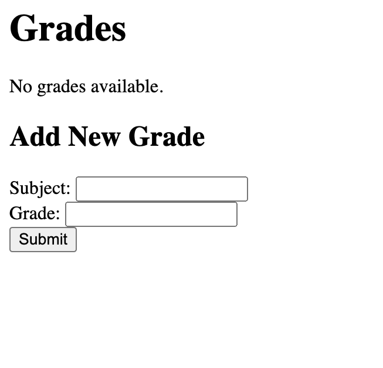
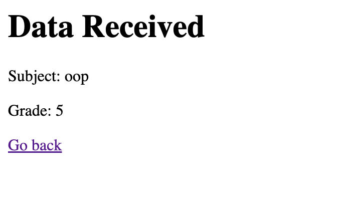
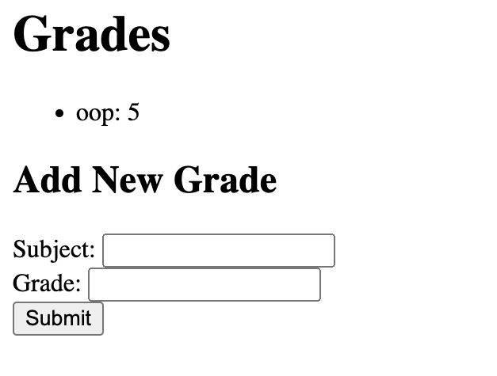

Задание 5:
Написать простой веб-сервер для обработки GET и POST HTTP-запросов с помощью библиотеки socket в Python.
Сервер должен:
- Принять и записать информацию о дисциплине и оценке по дисциплине.
- Отдать информацию обо всех оценках по дисциплинам в виде HTML-страницы.
Выполнение:
Храним оценки словарем в памяти, на лету формируем HTML из захардкоженных частей, юзер получает страницу и дальше может взаимодействовать только с ней, отправляя POST-запросы с данными формы. Чтобы потыкать (после запуска сервера): тык
# Lr1/5/server.py
import socket
import urllib.parse
grades = {}
def handle_client(client_socket):
request_data = client_socket.recv(1024).decode()
if not request_data:
client_socket.close()
return
request_lines = request_data.split('\r\n')
request_line = request_lines[0]
method, path, version = request_line.split()
if method == 'POST':
try:
empty_line_index = request_lines.index('')
except ValueError:
client_socket.close()
return
headers = request_lines[1:empty_line_index]
body = '\r\n'.join(request_lines[empty_line_index + 1:])
content_length = 0
for header in headers:
if header.startswith('Content-Length'):
content_length = int(header.split(':')[1].strip())
break
# if body is incomplete, read the rest
while len(body.encode()) < content_length:
body += client_socket.recv(1024).decode()
# parse the body (assuming application/x-www-form-urlencoded)
params = urllib.parse.parse_qs(body)
# store the subject and grade
subject = params.get('subject', [''])[0]
grade = params.get('grade', [''])[0]
if subject and grade:
grades[subject] = grade
response = 'HTTP/1.1 200 OK\r\nContent-Type: text/html\r\n\r\n'
response += '<html><body><h1>Data Received</h1>'
response += f'<p>Subject: {subject}</p>'
response += f'<p>Grade: {grade}</p>'
response += '<p><a href="/">Go back</a></p>'
response += '</body></html>'
client_socket.sendall(response.encode())
elif method == 'GET':
html_content = '<html><body><h1>Grades</h1>'
if grades:
html_content += '<ul>'
for subject, grade in grades.items():
html_content += f'<li>{subject}: {grade}</li>'
html_content += '</ul>'
else:
html_content += '<p>No grades available.</p>'
html_content += '''
<h2>Add New Grade</h2>
<form method="POST" action="/">
Subject: <input type="text" name="subject"><br>
Grade: <input type="text" name="grade"><br>
<input type="submit" value="Submit">
</form>
'''
html_content += '</body></html>'
response = 'HTTP/1.1 200 OK\r\nContent-Type: text/html\r\n\r\n' + html_content
client_socket.sendall(response.encode())
else:
response = 'HTTP/1.1 405 Method Not Allowed\r\n\r\n'
client_socket.sendall(response.encode())
client_socket.close()
def run_server():
server_address = ('', 8080)
server_socket = socket.socket(socket.AF_INET, socket.SOCK_STREAM)
server_socket.bind(server_address)
server_socket.listen(5)
print('Server is running on port 8080...')
while True:
client_socket, client_address = server_socket.accept()
handle_client(client_socket)
if __name__ == '__main__':
run_server()
  